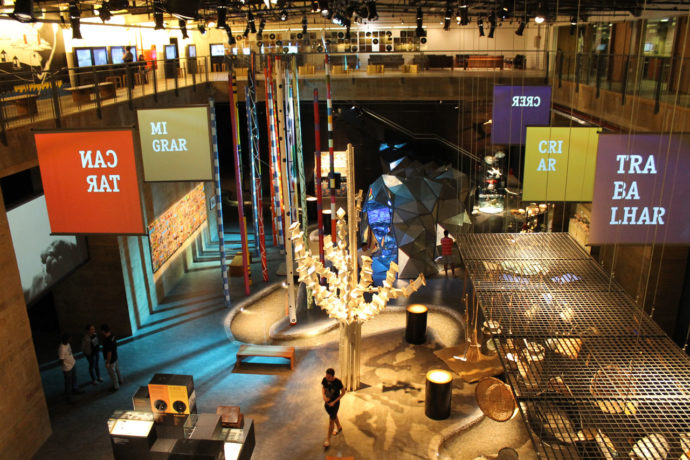

Recife Antigo
O que fazer em Recife?
1. Marco Zero
2. Museu Cais do Sertão
Mistura o tradicional e o moderno pra retratar a cultura do Sertão nordestino e a vida de Luiz Gonzaga. 3. Museu Paço do Frevo
Dedicado à perpetuação da memória desse ritmo tão pernambucano, o museu traz fotos, estandartes, janelonas com trechos de músicas icônicas e até um Glossário do Carnaval, explicando o significado de termos como “evoé” e “abre-alas”.